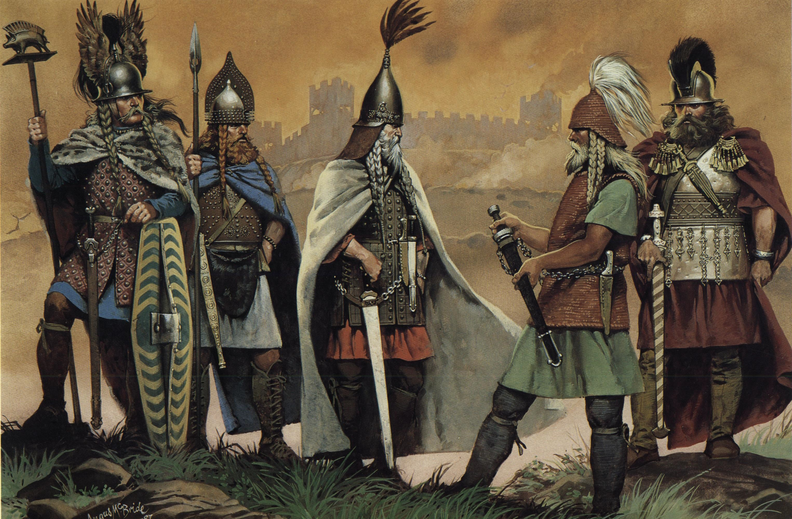
Early Ireland was made up of small tribal kingdoms. The Gaelic language, laws, and customs influenced daily life. Society focused on family ties, farming, and a warrior culture. Poets and druids played important social roles. This time laid the cultural foundation of the island.
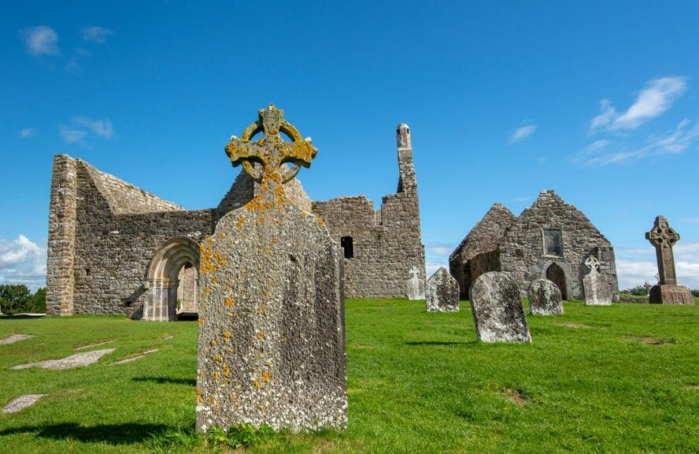
Christianity spread mainly in the 5th century. Monasteries became centers for learning, art, and manuscript production. Irish monks traveled across Europe to share knowledge. Pagan traditions blended with Christian practices. The church grew into a major political force.
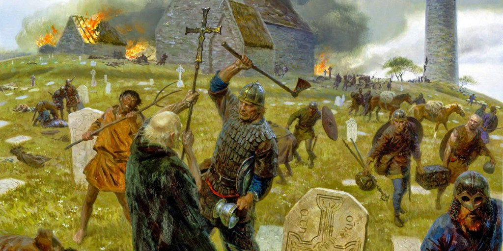
Vikings started raiding in the late 700s. Eventually, they began to settle instead of just attacking. They established important towns like Dublin, Waterford, and Limerick. Trade increased as Ireland linked up more with the rest of the world.
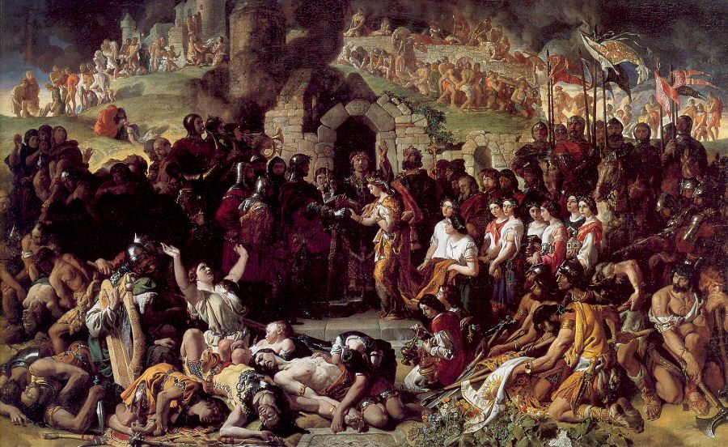
The Normans arrived in 1169 to support an Irish king in a local dispute. Their arrival quickly changed into a broader conquest. They brought feudal systems and stone castles. Many Gaelic lords fought back but lost land. English influence started to take hold.
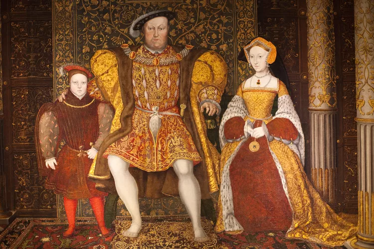
Tudor rulers aimed to bring all of Ireland under English control. They crushed rebellions and confiscated lands. English and Scottish settlers moved into these areas. This weakened Gaelic power, changed demographics, and increased cultural tensions.
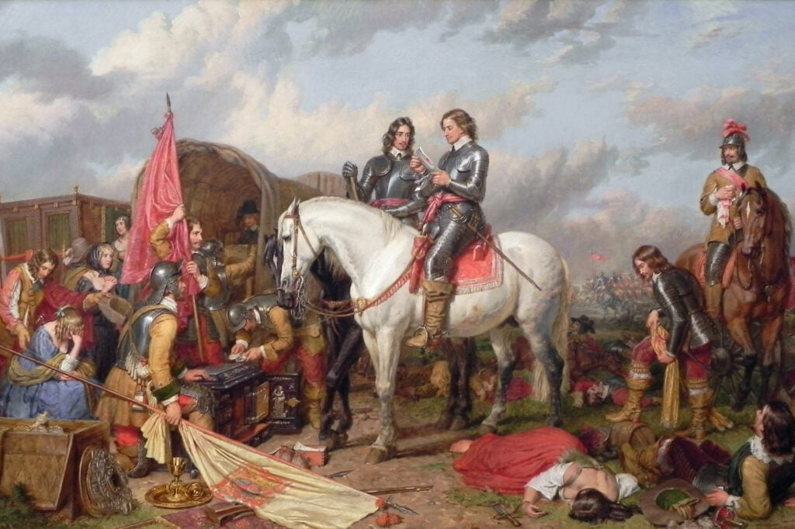
Cromwell invaded in the 1650s with brutal military force. Many towns were besieged, and the populations faced heavy losses. Land confiscations increased even further. Catholic landowners were displaced on a large scale. The social landscape changed dramatically.
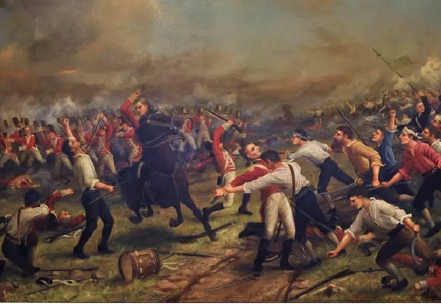
The United Irishmen wanted a republic that did not favor any religion, inspired by the American and French revolutions. Rebellion erupted in several counties. British forces defeated it after intense fighting. Leaders faced execution or exile. The uprising influenced later nationalist movements.
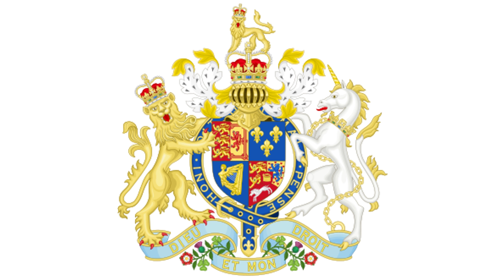
The Act dissolved the Irish parliament and merged Ireland into the United Kingdom. Political power shifted completely to London. Many Irish people viewed this as a loss of self-governance. It also increased demands for reform. The union influenced politics for more than a century.
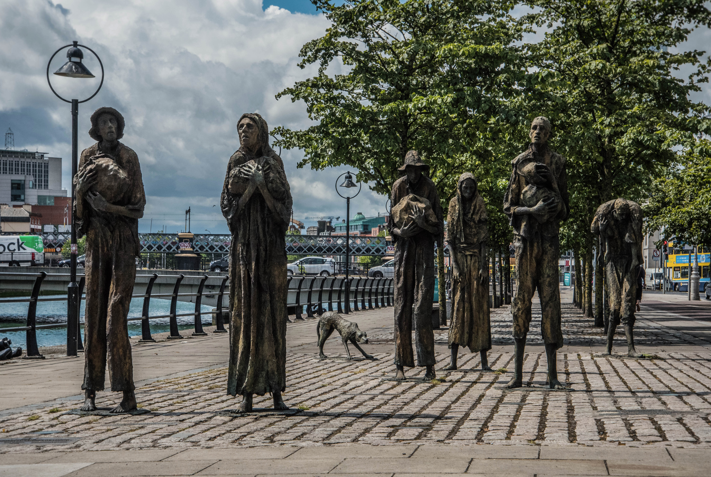
A potato blight destroyed the main food source for the poor. More than a million people died, and many others moved away. Government help was slow and often did not work well. Rural communities fell apart in many areas. This trauma had a lasting effect on the nation's memory.
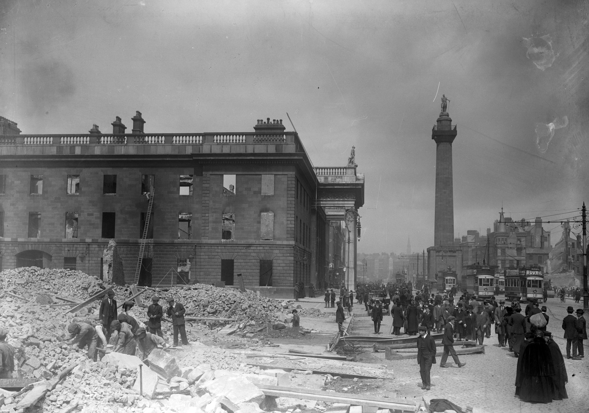
A small rebel force took control of buildings in Dublin during World War I. British troops quickly suppressed the uprising. The execution of the leaders shifted public opinion. Many Irish people began to support the independence movement afterward. This event became a major turning point.
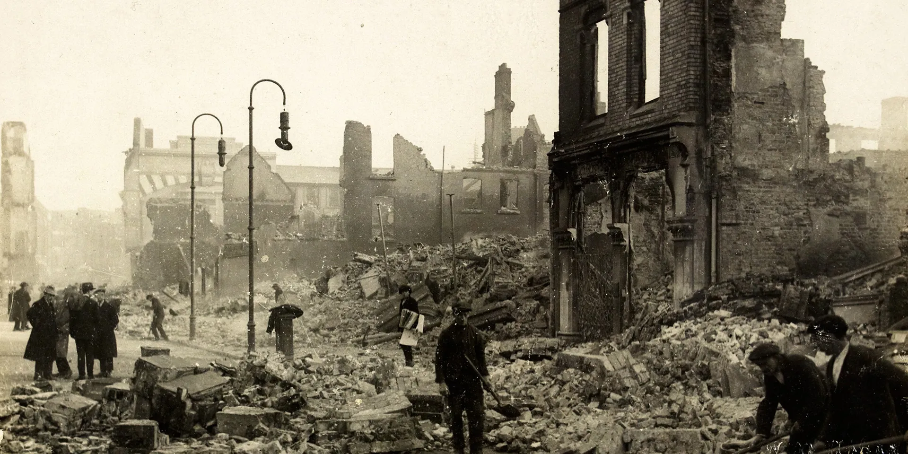
Guerrilla warfare started between Irish forces and the British. The conflict ended with the Anglo-Irish Treaty. Ireland was divided into Northern Ireland and the Free State. This created deep political division. A civil war followed over the terms of the treaty.
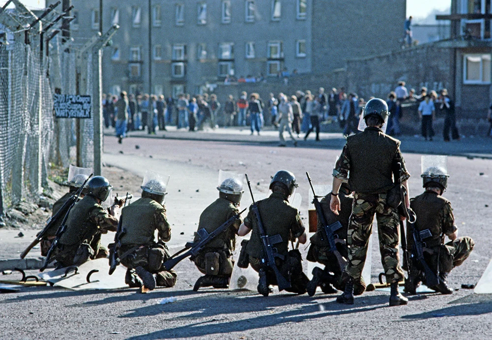
Tensions in Northern Ireland turned into conflict in the late 1960s. Nationalist and unionist communities fought against each other. Thousands were killed over three decades. Negotiations resulted in the Good Friday Agreement in 1998. Power-sharing and reforms helped stabilize the region.